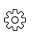

NetApp SaaS Backup for Office 365を使用したバックアップの管理 GitHubで編集 ドキュメントの変更をリクエストする
寄稿者
NetApp SaaS Backupのセットアッププロセスが完了したら、SaaS Backup for Office 365を使用して、Microsoft Exchange Online、Microsoft OneDrive for Business、およびMicrosoft SharePoint Onlineのバックアップを管理できます。
バックアップポリシー
SaaS Backup for Office 365には、バックアップポリシーの3つの事前定義された層があります。これらのポリシー階層は、SaaS Backupが提供するストレージを使用しているかBYOSを使用しているかによって、バックアップ頻度とデータ保持期間が異なります。
3つのポリシー間でデータを移動できますが、新しいポリシーを作成したり、事前定義された層のパラメーターを変更したりすることはできません。
SaaS Backupが提供するストレージのバックアップポリシー
| バックアップポリシー | バックアップ頻度 | デフォルトのデータ保持期間 |
|---|---|---|
ティア1 | 12時間ごとに1回 | 3年 |
ティア2 | 18時間ごとに1回 | 3年 |
ティア3 | 24時間に1回 | 3年 |
BYOSのバックアップポリシー
| バックアップポリシー | バックアップ頻度 | デフォルトのデータ保持期間 |
|---|---|---|
ティア1 | 12時間ごとに1回 | 永遠に |
ティア2 | 18時間ごとに1回 | 永遠に |
ティア3 | 24時間に1回 | 永遠に |
バックアップのスケジュールまたはバックアップ頻度の変更
保護されていないデータをバックアップポリシーに割り当てることにより、バックアップできます。保護されていないデータがバックアップポリシーに割り当てられると、割り当てられたポリシーの次のスケジュールされたバックアップが発生するまでPENDING状態に移行し、その後PROTECTED状態に移行します 。
保護されたデータのバックアップ頻度を変更する場合は、データを別のバックアップポリシー層に割り当てることができます。
ダッシュボードで、変更するサービスのボックスで[ 保護済み]または[ 保護なし ]の上の数字をクリックします。
保護されたデータのバックアップ頻度を変更する場合は、[保護済み]をクリックします 。新しく検出されたメールボックス、サイト、またはMySitesをバックアップする場合は、 UNPROTECTEDを選択します 。

あなたがバックアップや共有メールボックスのバックアップポリシーを変更する場合は、 共有タブをクリックします。
アーカイブメールボックスのバックアップポリシーをバックアップまたは変更する場合は、[ アーカイブ ]タブをクリックします。
通常のメールボックスをバックアップまたは変更する場合は、[ ユーザー ]タブのままにしてください 。バックアップするアイテムを選択します。
[ グループ ]メニューをクリックします。

バックアップ用の新しいポリシー層を選択します。
注 ：Microsoft Office 365グループとアーカイブメールボックスは、ティア3ポリシーにのみ移動できます。適用をクリックします。
サービスの即時バックアップを実行する
必要に応じて、Microsoft Office 365サービスのバックアップをすぐに実行できます。
ダッシュボードから、即時バックアップを実行するサービスのボックスで[ PROTECTED ]の上の数字をクリックします。
あなたが共有メールボックスをバックアップする場合は、 共有タブをクリックします。
アーカイブメールボックスをバックアップする場合は、[ アーカイブ ]タブをクリックします。
通常のメールボックスをバックアップする場合は、[ ユーザー ]タブのままにしてください 。バックアップするアイテムを選択します。
[ 今すぐバックアップ]をクリックします 。

選択したサービスがバックアップのためにジョブキューに配置されることを示すメッセージが表示されます。確認をクリックします。
バックアップジョブが作成されたことを示すメッセージが表示されます。[ ジョブの進行状況を表示]をクリックして、バックアップの進行状況を監視します。
バックアップ保持期間の更新
個々の層、メールボックス、サイト、およびMySitesのデータが保持される期間を年単位で7年、10年、または永久に更新できます。すべてのバックアップ層の保持期間が同じ場合、グローバル更新を実行して、すべてのテナントの保持期間を同時に変更できます。
特定の層のバックアップ保持期間の更新
ダッシュボードから、任意のサービスをクリックします。
バックアップポリシーの下で、変更するティアの保存期間の隣にあるドロップダウンメニューをクリックしてください。
事前定義されたリストから目的の保持期間を選択します。
[保持期間の更新]をクリックします。
テナントのバックアップ保持期間の更新
構成アイコンをクリックします左上隅のSaaSバックアップユーザーIDの横。
[ アカウント設定]をクリックします。
[保持してパージ]をクリックします。
特定のサービスの特定のユーザーのデータ保持ポリシーを更新するには、次の手順を実行します。
データ保持ポリシーの下では、 保存期間の隣にあるドロップダウンメニューをクリックして、予め設定された時刻のリストから希望の期間を選択します。
TYPE OF SERVICEの横にあるドロップダウンメニューをクリックして、更新するサービスを選択します。
検索ボックスで、更新するユーザー、サイト、またはMySiteの入力を開始します。
一致する結果から必要なユーザー、サイト、またはMySiteを選択します。
クリック 。
必要に応じて、個々のメールボックス、サイト、またはMySiteの検索と追加を続けます。
保存をクリックします 。
選択した個々のメールボックス、サイト、またはMySitesは、選択した保持期間に更新されます。
テナントレベルでデータ保持ポリシーを更新するには、次の手順を実行します。
テナントレベルデータ保持ポリシーの下では、 保存期間の隣にあるドロップダウンメニューをクリックして、予め設定された時刻のリストから希望の期間を選択します。
保存をクリックします 。
すべてのバックアップポリシー層が、選択した保持期間に更新されます。
バックアップ設定の更新
バックアップ設定を更新して、さまざまなバックアップオプションを制御できます。利用可能なバックアップ設定は、サービスによって異なります。
| バックアップ設定 | 説明 | 有効化 | で利用可能… |
|---|---|---|---|
自動同期 | 新しく追加または削除されたユーザー、OneDrive、またはサイトコレクションの24時間ごとに1回の自動スケジュール同期を有効にします。 | デフォルトで | Microsoft Exchange Online |
回復可能なアイテムの復元を有効にする | ユーザーがMicrosoft Exchangeの回復可能なアイテムを復元できるようにします | 手動で | Microsoft Exchange Online |
回復可能なアイテムのバックアップを有効にする | Microsoft Exchangeの回復可能なアイテムのバックアップを有効にします。回復可能なアイテムのバックアップを許可するのは、ティア1バックアップポリシーのみです。 | 手動で | Microsoft Exchange Online |
ワークフローを含める | バックアップにワークフローを含めます | 手動で | Microsoft SharePoint Online |
リストビューを含める | バックアップのリストのビューを含む | 手動で | Microsoft SharePoint Online |
バージョン履歴を含める | バックアップ内の複数のファイルバージョンのメンテナンスを有効にします。 | デフォルトで | Microsoft SharePoint Online |
バージョン数 | 維持するバックアップファイルバージョンの数を設定します。 | デフォルトで20に設定 | Microsoft SharePoint Online |
左側のナビゲーションペインで[ サービス]をクリックします 。

[Microsoft Office 365]をクリックします。

[サービスの管理 ]で、バックアップ設定アイコンをクリックします
 更新する必要があるサービスの横。
更新する必要があるサービスの横。
選択したサービスで使用可能なバックアップ設定のリストが表示されます。目的のバックアップ設定を選択します。
確認をクリックします。
Microsoft SharePoint Onlineでサポートされているテンプレート
Microsoft SharePoint Onlineバックアップでは、次のテンプレートのみがサポートされています。
STS＃0（チームサイト）
BLOG＃0（ブログサイト）
DEV＃0（開発者サイト）
PROJECTSITE＃0（プロジェクトサイト）
コミュニティ＃0（コミュニティサイト）
BDR＃0（ドキュメントセンター）
COMMUNITYPORTAL＃0（コミュニティポータル）
ENTERWIKI＃0（エンタープライズWIKI）
EHS＃1（ルートサイト）
EHS＃0（ルートサイト）
SITEPAGEPUBLISHING＃0（通信サイト）
GROUP＃0（グループサイトコレクションプレフィックス）
STS＃1（空白サイト）
STS＃2（ドキュメントワークスペース）
STS＃3（現代チームサイト）
APP＃0（アプリテンプレート）
Microsoft SharePoint Onlineでサポートされているアプリ
次のアプリは、Microsoft SharePoint Onlineバックアップでサポートされています。
カスタムリスト
バッジ（コミュニティサイト）
ドキュメントライブラリ
スタイルライブラリ
調査
リンク
発表
接触
カレンダー
ディスカッションボード
写真
画像ライブラリ
コンテンツWebパーツ
リストテンプレートギャラリー
マスターページギャラリー
サイトページ
データセットビューのカスタムリスト
ソリューションギャラリー
テーマギャラリー
構成されたルックス
プロモリンク
タスク
投稿（ブログサイト）
コメント（ブログサイト）
コミュニティディスカッション（コミュニティサイト）
カテゴリ（ブログサイト）
コミュニティカテゴリ（コミュニティサイト）
報告書
Wikiページ
サイトコレクションの画像
コミュニティメンバー（コミュニティサイト）
問題追跡
レコードライブラリ
リンクを共有する